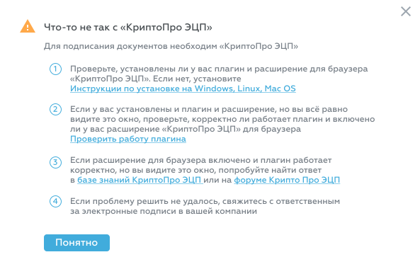
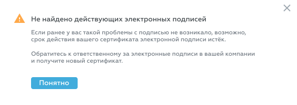
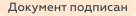

Содержание этой статьи может немного расходиться с текущей реализацией Riverdoc. Если возникнут вопросы, пожалуйста, обращайтесь по электронной почте guides@ntik.ru.
Содержание этой статьи может немного расходиться с текущей реализацией Riverdoc. Если возникнут вопросы, пожалуйста, обращайтесь по электронной почте guides@ntik.ru.
Для подписания документов электронной подписью в Riverdoc необходимо дополнительно установить:
●криптопровайдер КриптоПРО CSP
https://www.cryptopro.ru/products/csp/downloads;
●плагин КриптоПРО
(https://www.cryptopro.ru/sites/default/files/products/cades/demopage/cades_bes_sample.html);
●расширение для браузера
(Chrome: https://chrome.google.com/webstore/detail/cryptopro-extension-for-c/iifchhfnnmpdbibifmljnfjhpififfog?hl=ru).
Правила подписания документов в Riverdoc
▪Конфигурацию электронной подписи настраивает администратор системы для каждого вида документов. В конфигурации администратор определяет что именно будет подписано в документах определённого вида: только файл, файл и определённые атрибуты, только некоторые атрибуты.
▪Для подписания атрибутов документа необходимо право доступа как минимум "Просмотр" (Browse). Для подписания файла или файла и атрибутов необходимо право доступа как минимум "Чтение" (Read).
▪Информация об электронных подписях документа хранится в карточке подписанной версии.
▪При редактировании подписанного документа подписи остаются в подписанной версии документа. После сохранения изменений документ считается неподписанным, подписи необходимо будет получить повторно.
▪Невозможно подписать заблокированный документ (даже если вы держатель блокировки).
Как подписать документ
В Riverdoc пользователь подписывает документ из карточки задачи процесса, по которой этот документ проходит.
Чтобы подписать документ:
1.Откройте карточку задачи, по которой этот документ проходит.
2.В карточке задачи в области Вложения найдите нужный документ.
3.Наведите курсор мыши на виджет документа, затем нажмите значок  .
.
4.В появившемся списке выберите команду Подписать документ.
{kind=link}
Как подписать документ из карточки задачи
Откроется диалоговое окно Подтверждение доступа (это окно операционной системы). Ознакомьтесь с информацией и нажмите Да, если разрешаете Riverdoc подписывать документы электронной подписью.
 Примечание. Если хотите заблокировать появление этого окна в дальнейшем, выполните указанные в диалоге действия.
Примечание. Если хотите заблокировать появление этого окна в дальнейшем, выполните указанные в диалоге действия.
Далее Riverdoc проверит, все ли необходимые сторонние приложения установлены. Возможен один из следующих результатов проверки:
Проверка завершилась успешно:
Откроется окно Выберите сертификат для подписи.
Проверка завершилась неуспешно:
Riverdoc выведет диалоговое окно с возможными причинами ошибок и подсказками, как устранить ошибки. Пожалуйста, ознакомьтесь с сообщением в этом окне.
 Показать скриншот "Что-то не так с КриптоПРО ЭЦП"
Показать скриншот "Что-то не так с КриптоПРО ЭЦП"
 |
 Не найдено действующих электронных подписей
Не найдено действующих электронных подписей
 |
5.В окне Выберите сертификат для подписи нажмите кнопку Подписать, если у вас один сертификат подписи. Если у вас несколько сертификатов*, выберите нужный с помощью переключателя и нажмите Подписать.
* Список сертификатов ЭП предоставляется плагином КриптоПро.
В результате система проверит права доступа к документу и выведет уведомление об успешном подписании документа или укажет причину, по которой документ подписать не удалось, например "У вас не хватает прав для подписи %имя_документа%".
Просмотр подписей и их проверка
Если подписана текущая версия документа, то документ отмечается , а в карточке документа добавляется метка . Если была подписана одна из предыдущих версий документа, то документ считается неподписанным и не отмечается значком .
Просмотр подписей
Информация об электронных подписях документа хранится в карточке подписанной версии на вкладке Подписи.
Карточка подписанной версии документа. Вкладка "Подписи"
Если текущая версия документа не подписана, в окне будет отображаться уведомление "Эта версия документа ещё не подписана". Если текущая версия документа содержит подписи, то они отображаются на вкладке Подписи в виде таблицы со столбцами:
•Подписант – фамилия и имя сотрудника, подписавшего текущий документ.
•Роль – роль сотрудника в рамках задачи, по которой он подписал документ. Например, "Исполнитель" или "Генеральный директор". Роли настраивает администратор системы в Консоли администрирования.
•Дата подписания – дата и время, когда сотрудник подписал документ.
•№ Сертификата и срок действия – номер и срок действия сертификата электронной подписи.
Проверка подписей
Чтобы проверить действительность подписей, проставленных в документе, нажмите кнопку (на вкладке Подписи вверху справа). После проверки подписей напротив каждой подписи появится метка с результатом проверки, возможны варианты:
•Подпись действительна;
•Не действительна, изменён файл документа;
•Не действительна, изменены атрибуты документа;
•Не действительна, изменён файл документа и его атрибуты.
 Примечание. Один и тот же документ могут подписать несколько сотрудников, причём каждый из сотрудников может подписать документ несколько раз.
Примечание. Один и тот же документ могут подписать несколько сотрудников, причём каждый из сотрудников может подписать документ несколько раз.